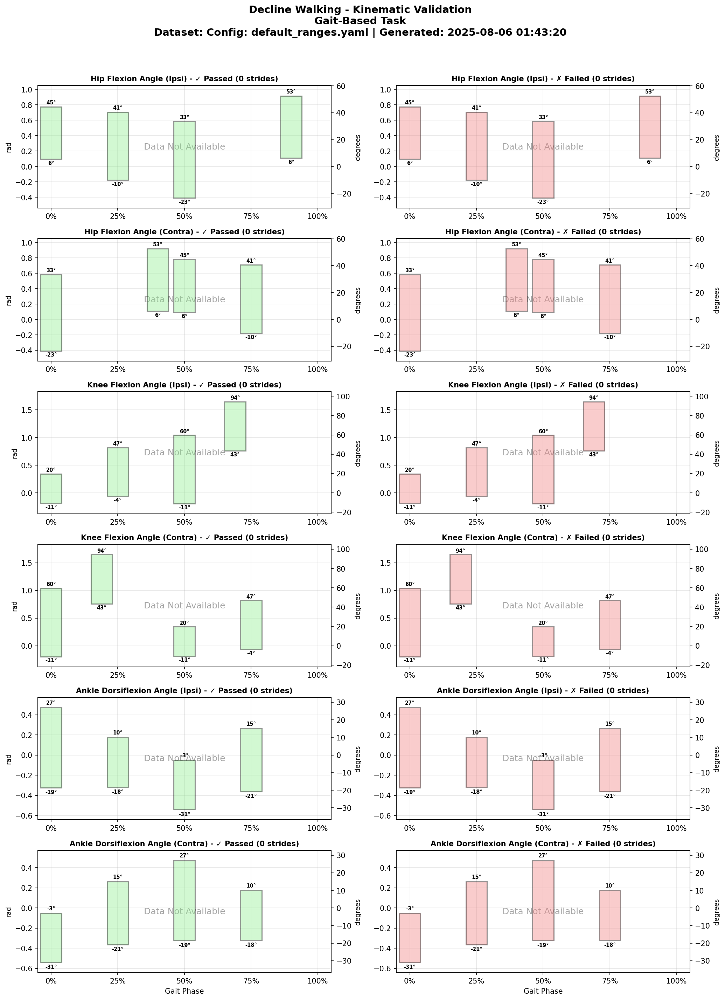
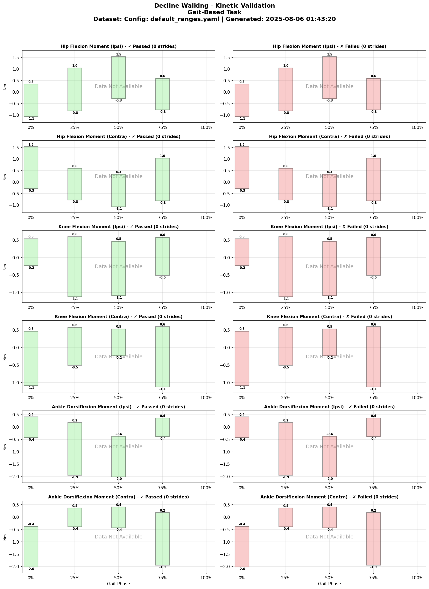
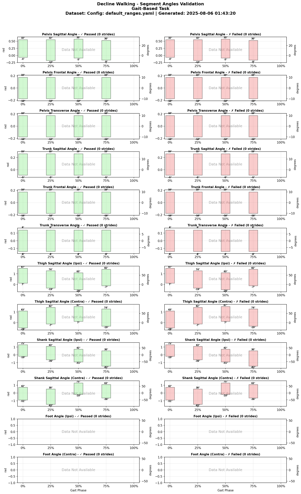
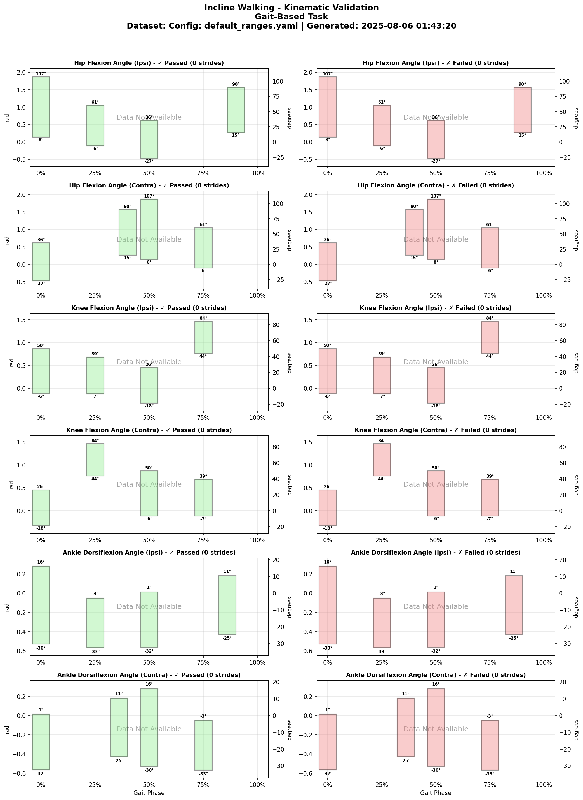
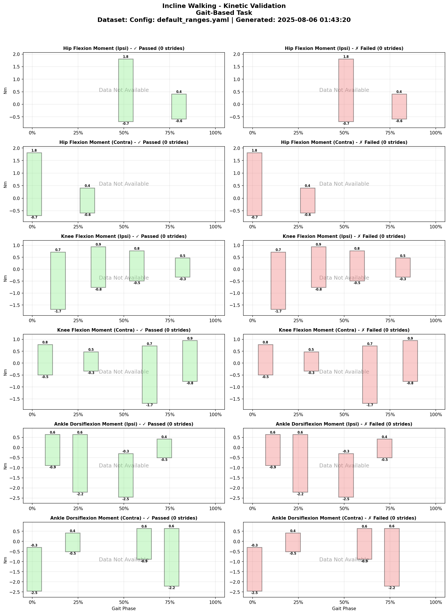
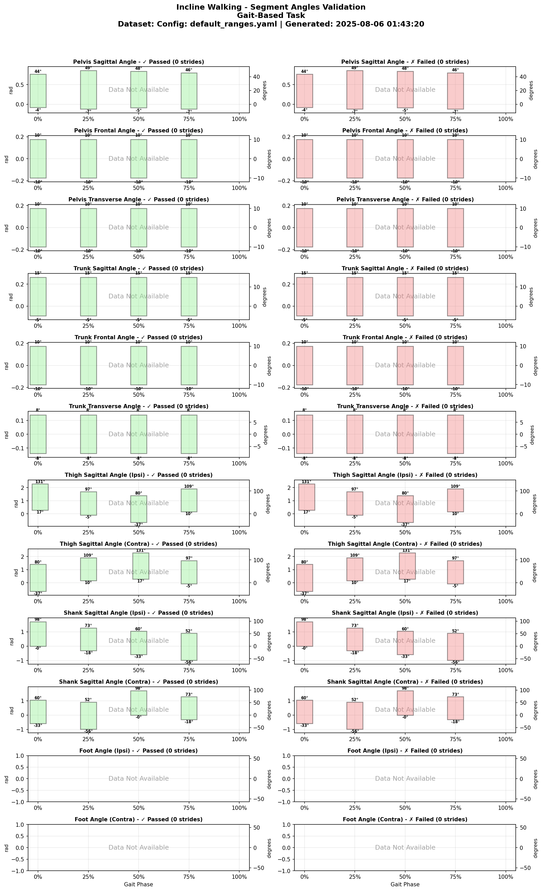
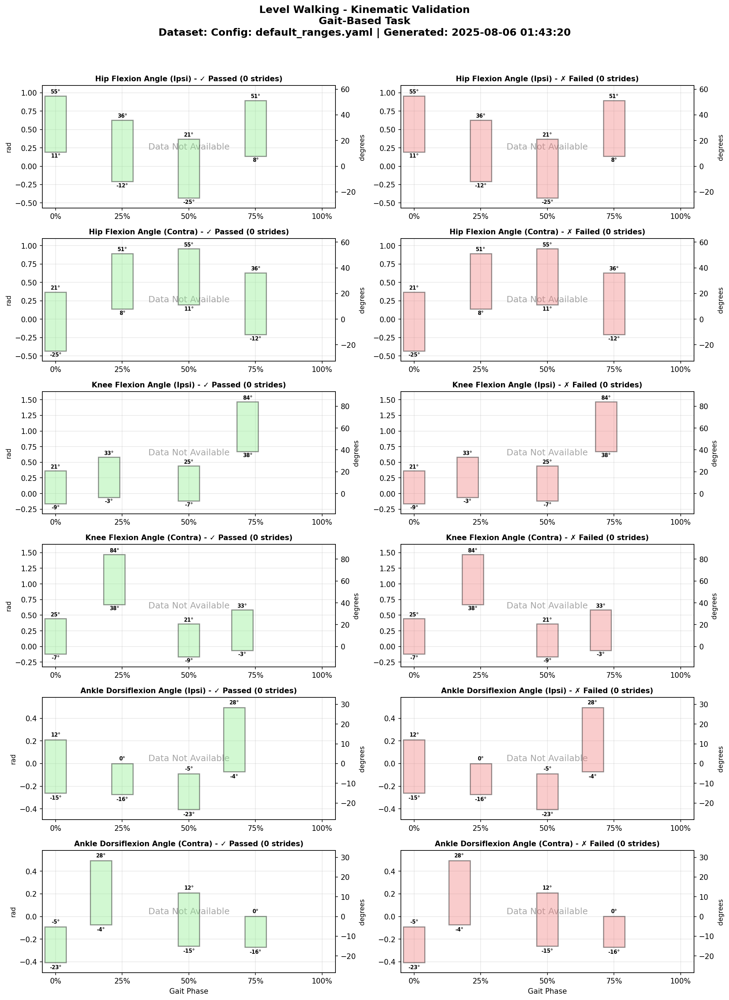
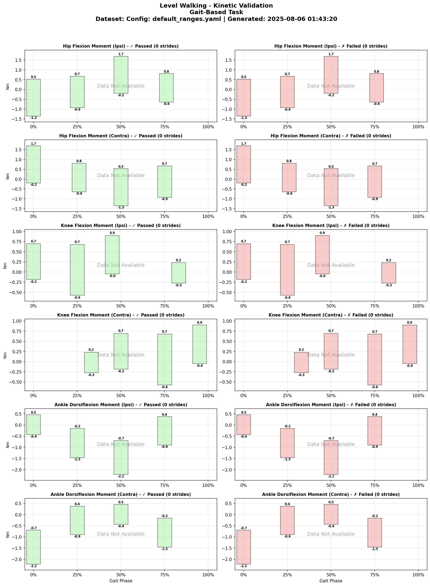
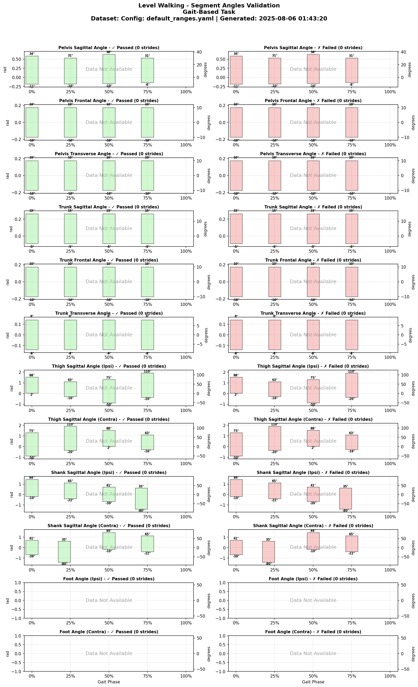

LocoHubValidation Ranges
Validation Ranges
Curated reference ranges; evidence and population applicability require review
Configuration Metadata
- Config File:
default_ranges.yaml - Generated: 2025-08-06 01:46:04
- Description: Interactively tuned validation ranges for all features
Task: Decline Walking
Phase-Based Visualizations
Reference bounds at configured phase samples (not a continuous waveform assessment):
Kinematic Variables (Joint Angles)

Kinetic Variables (Joint Moments)

Segment Angles

Task: Incline Walking
Phase-Based Visualizations
Reference bounds at configured phase samples (not a continuous waveform assessment):
Kinematic Variables (Joint Angles)

Kinetic Variables (Joint Moments)

Segment Angles

Task: Level Walking
Phase-Based Visualizations
Reference bounds at configured phase samples (not a continuous waveform assessment):
Kinematic Variables (Joint Angles)

Kinetic Variables (Joint Moments)

Segment Angles

Generated from default_ranges.yaml on 2025-08-06 01:46:04